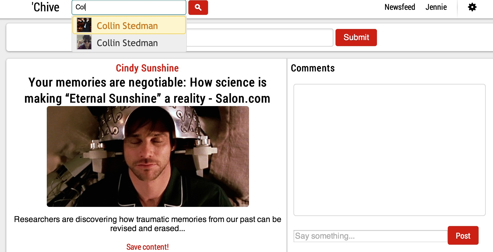
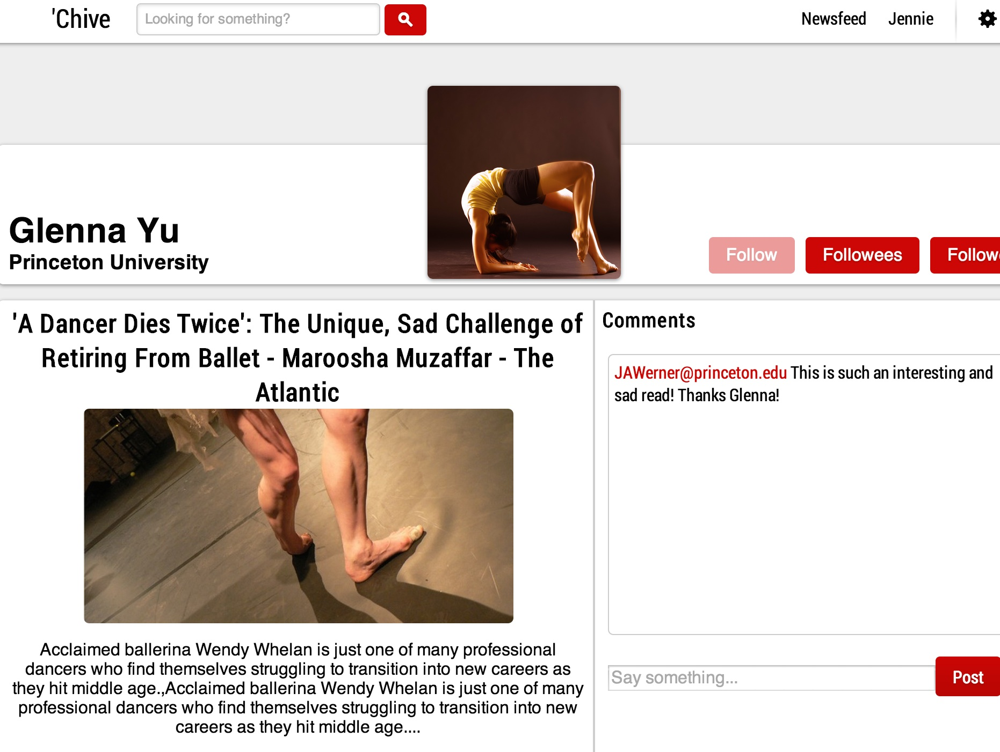
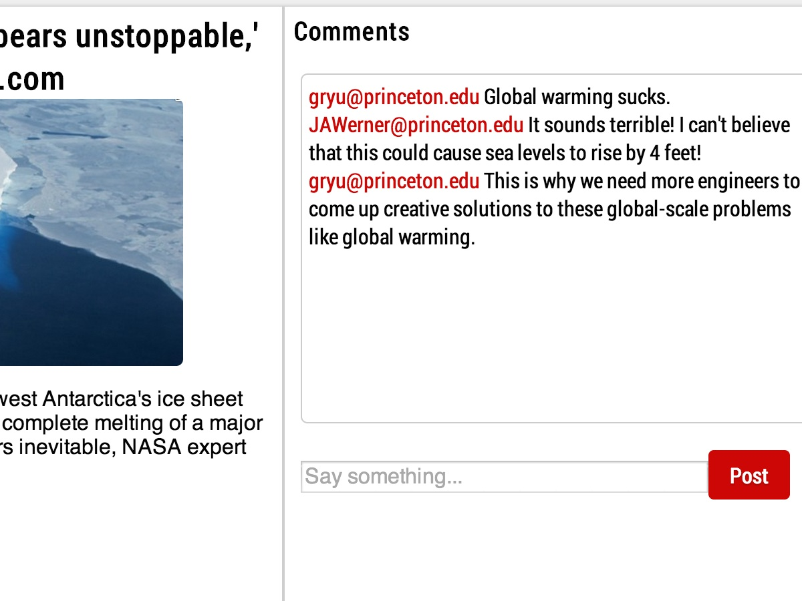

Welcome to 'Chive!
Where you can save and share the links you care about,
without the distractions of other social media sites
"Great minds discuss ideas, average minds
dicuss events, small minds discuss people."
- Eleanor Roosevelt
Created by Erik Portillo, Collin Stedman, Jennie Werner, Jeffrey Yan, and Glenna Yu

'Chive gives you the ability to follow and share all the interesting articles, links, and videos you and your friends care about, without the distractions of other traditional social media sites.

Follow your friends or public figures who inspire you to see what they're interested it.
Your newsfeed will contain links from those you follow and by going to their profile page, you can access all of their saved links.


'Chive offers a revolutionary design, featuring the comments on a particular link to the right, instead of below everything.
We put the focus equally on the link as the discussion pertaining to the link.
What do I need to make an account?
All you need to is to enter your first and last name, email, and password on this page and then verify your email. Once you've done that, all you need to do is log in and you're ready to start using 'Chive
How do I add an article to my archive?
Simply make sure you're logged into 'Chive and on your homepage. At the top of the page should be text box saying "Share this!" Simply copy and paste your URL into the box and your URL has been saved!
How can I access my archive?
Click on your name at the top of any page on 'Chive's website and you'll be brought to your profile page containing all your saved archives.
How can I access other people's archives?
At the top of the page, start typing in the person's email where it says "Looking for something?" Click search and you'll be brought to their profile page with all their archived content.
Is it possible for me to discuss content I post with my friends?
Yes! 'Chive allows you to comment on different archived content and have discussions with your friends about what you have posted.
I have suggestions for improvements to your awesome website! Where can I submit them?
Great! We'd love to hear your suggestions! Send us an email at chivecontact@gmail.com .